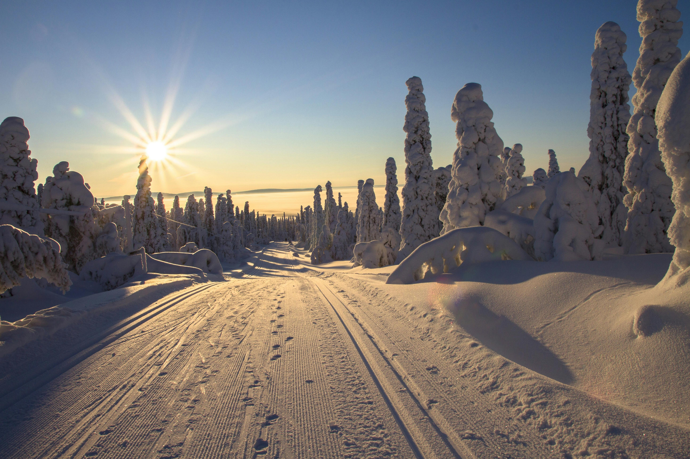

Arctique
Explorez les vastes étendues de glace et de neige de l'Arctique. Observez les ours polaires dans leur habitat naturel et découvrez les aurores boréales.

Explorez les vastes étendues de glace et de neige de l'Arctique. Observez les ours polaires dans leur habitat naturel et découvrez les aurores boréales.

Plongez dans la majesté des fjords norvégiens. Admirez les paysages glaciaires uniques et découvrez les villages pittoresques nichés dans ces vallées naturelles.

Participez à une véritable aventure polaire. Explorez les vastes étendues de toundra arctique, observez la faune locale et découvrez les traditions indigènes.
"L'expédition aux Aurores Boréales avec Aurora a été l'une des expériences les plus incroyables de ma vie ! L'équipe était professionnelle et passionnée."
Marie Dupont"La croisière dans les fjords norvégiens était magnifique. Le guide local nous a fait découvrir des endroits cachés que nous n'aurions jamais trouvés seuls."
Jean-Pierre Martin"L'aventure en toundra arctique était au-delà de mes attentes ! Observer les ours polaires dans leur habitat naturel fut un moment inoubliable."
Sophie Leroy